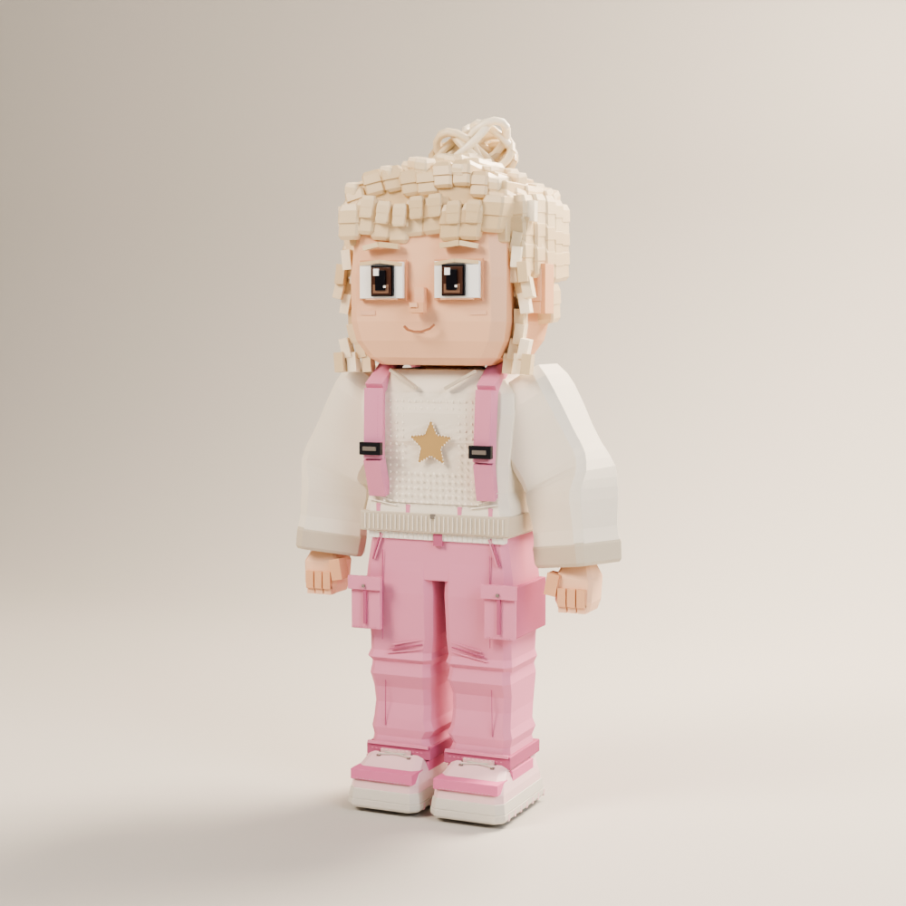
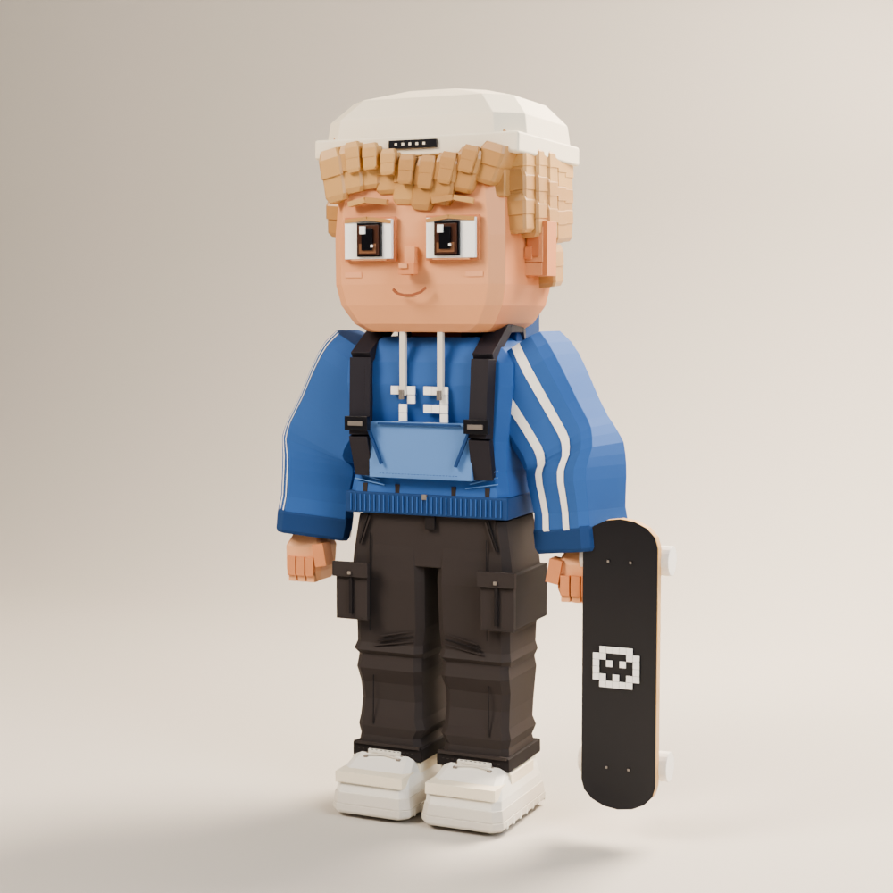
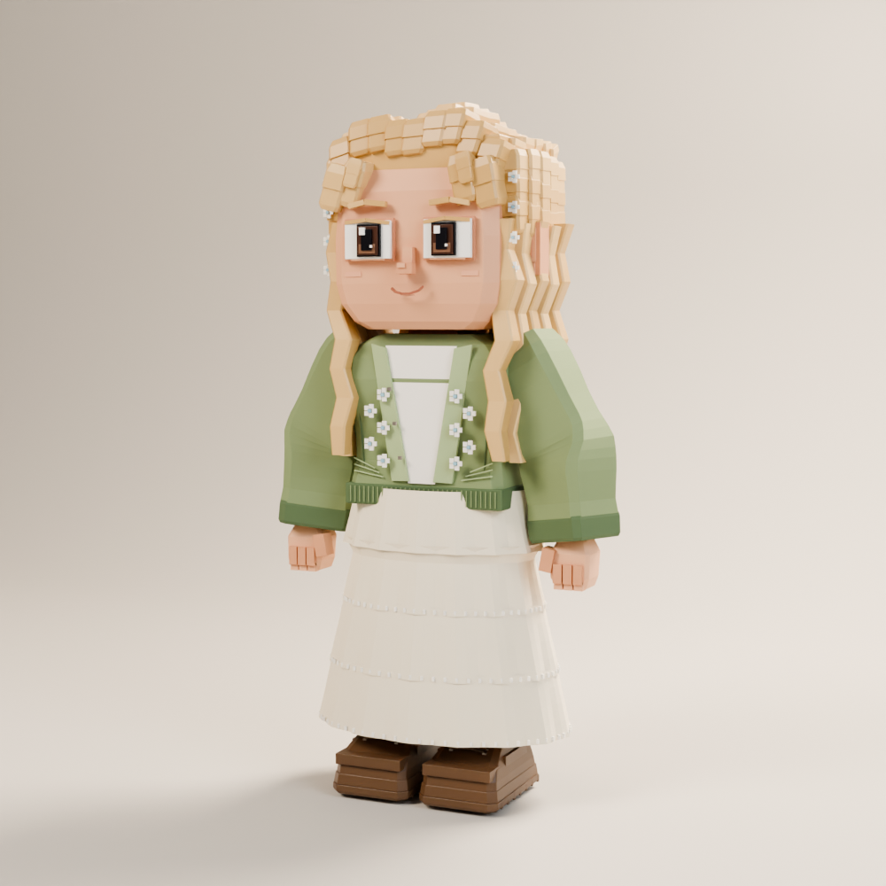
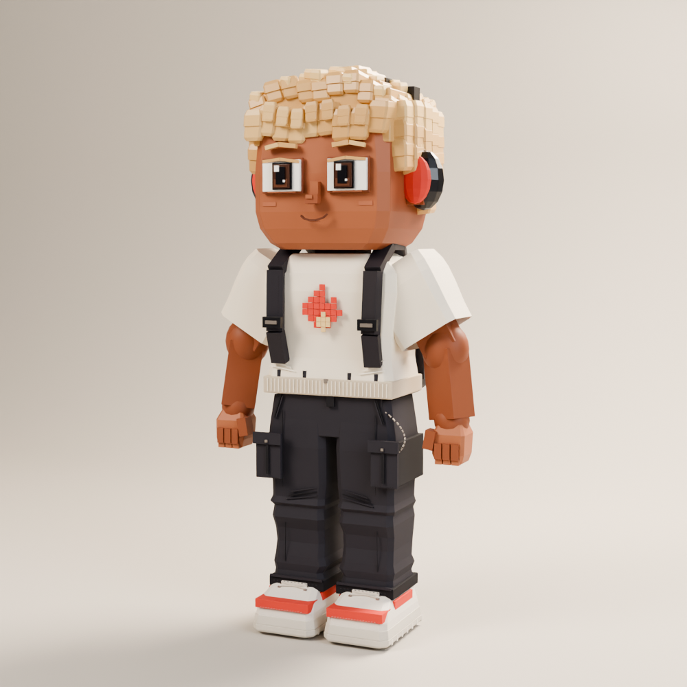
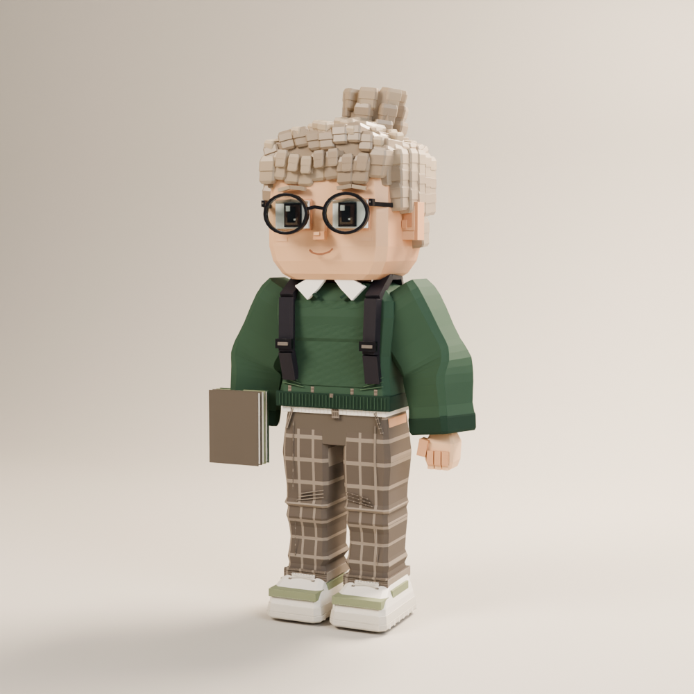
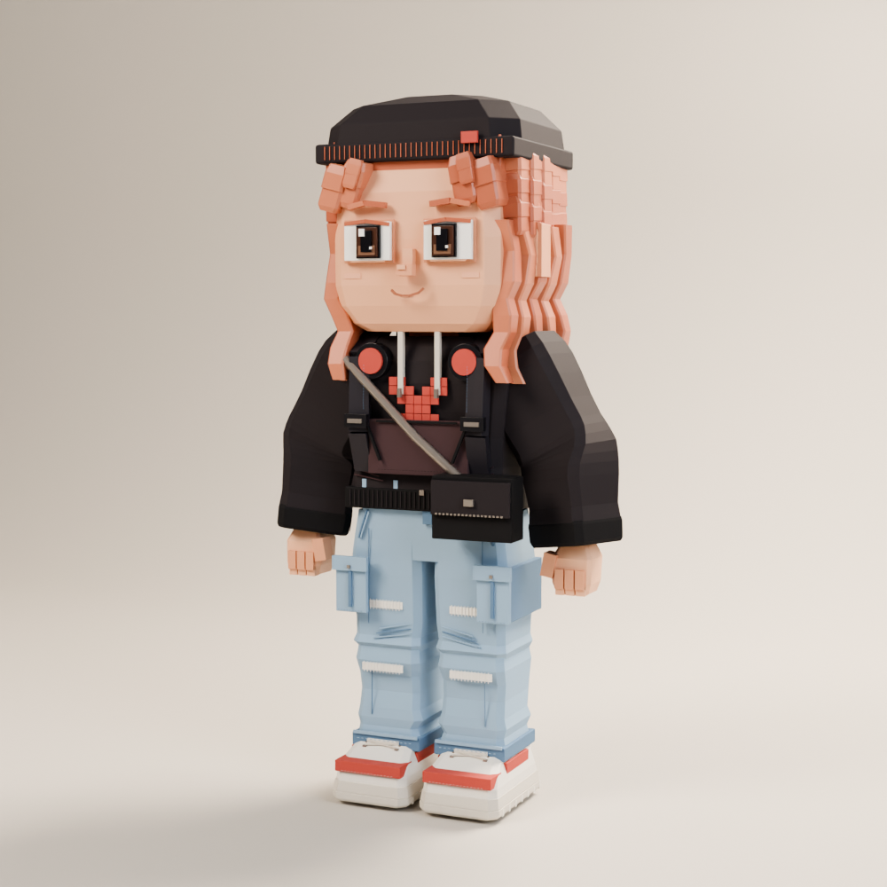
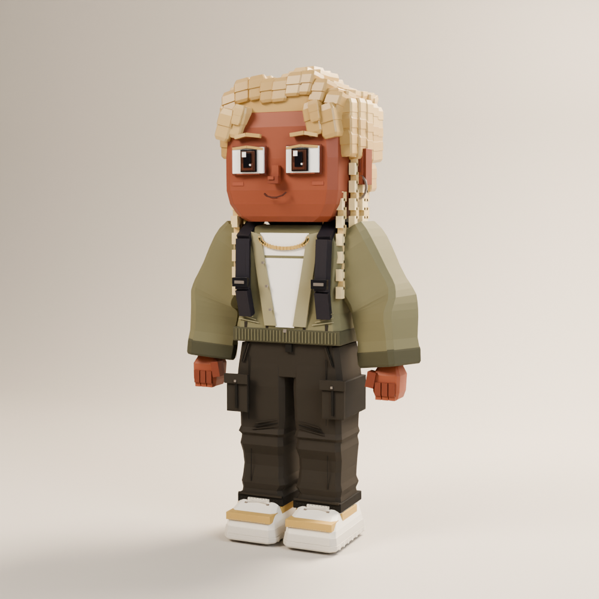
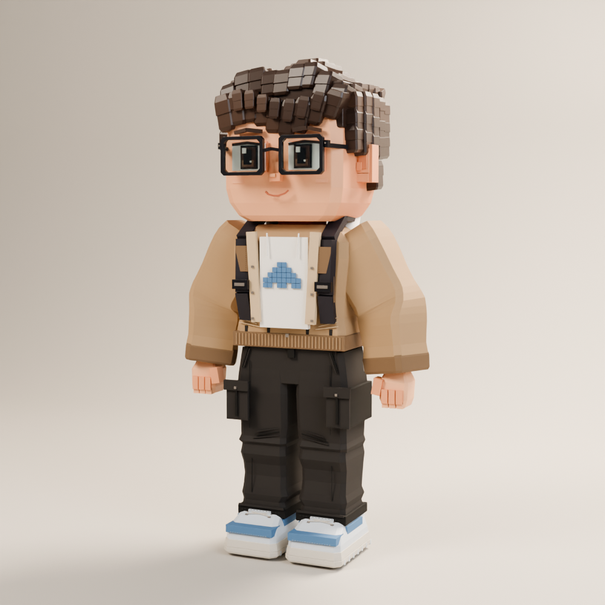

Ocho primeras versiones modeladas en Blender, con ropa separada y rig compartido. Todavía requieren refinamiento artístico, prueba completa de vestuario y poses. No están integradas en la app.







